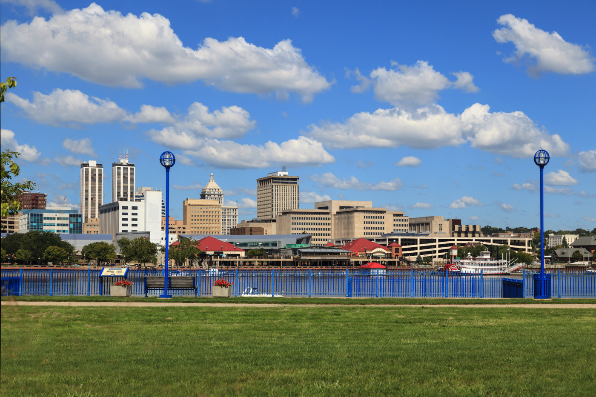

Peoria, Illinois

City Introduction
Located along the Illinois River, Peoria is the 8th most populated
city in Illinois. Peoria is the oldest European settlement in
Illniois. The city is known for it's phrase "Will it play in Peoria"
as it is commonly used to determine musical success in the United
States, given the diverse cultural mix of it's inhabitants, known as
"Peorians".
The founders of Peoria, Arizona, Joseph B. Greenhut and Deloss S. Brown wished to name the city after their hometown of Peoria, Illinois. The name Peoria derives from a native Peoria tribe that had originally settled the greater Peoria area. The Peoria tribe is a remnant of the nations that formed the Illinois Confederation.